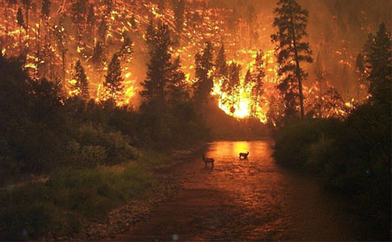

Arson is the intentional burning of private or public property. Half of arson fires are set outdoors (such as wooded or grassy areas, parks, construction sites), 30% are set inside houses or other buildings, and 20% involve vehicles. Vacant and abandoned buildings are often targets for arsonists. Arson incidents are fourteen times more likely in poor neighbourhoods than in high income neighbourhoods.
Sometimes arsonists target forested or grassy areas. Such uncontrolled fires have a number of different names usually depending upon which type of vegetation is set on fire (such as forest fire, grass fire, peat fire, or bushfire). Often these wildfires get out of control and destroy nearby houses or agricultural resources. Heat waves, droughts, and high winds can dramatically increase the size of the area consumed by a wildfire.
In 1933, the Nazis allegedly burned the Reichstag (Germany’s parliament building.) The incident gave the Nazi Party an excuse to introduce the Reichstag Fire Decree, one of the key steps that led the Nazi Party to take control of German government.